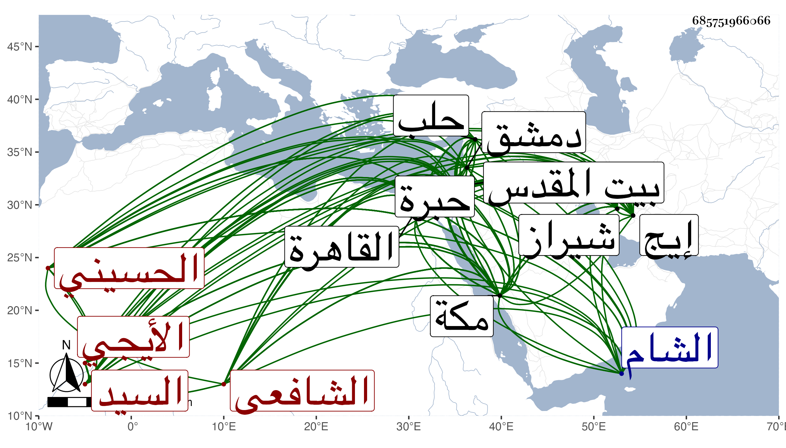

0902Sakhawi.DawLamic.ITO20230111-ara1.EIS1600.685751966066
Biography ID: 685751966066
419
عبيد الله بن محمد بن محمد بن محمد بن عبد الله بن محمد بن عبد الله السيد نور الدين أبو حامد بن العلاء بن العفيف أبي بكر الحسيني الأيجي الشافعي سبط السيد صفي الدين عم والده الآتي وأبوه وجده وقريب الذي قبله ويعرف كأبيه بابن السيد عفيف الدين . ولد في يوم السبت خامس عشري ذي القعدة سنة اثنتين وأربعين وثمانمائة بشيراز وتحول منها صحبة أبيه وجده لأمه إلى مكة فأحضر بها على أبي الفتح المراغي المسلسل وبعض الصحيح وتناول سائره وبالمدينة على المحب المطري ، وأقام بإيج فحفظ القرآن وبعض الحاوي وفي الصرف النخبة لجده وفي النحو الكافية وشيئا من الطوالع وغير ذلك وأخبرني أنه حفظ سورة الأنعام في يوم وأخذ عن الصفي جده لأمه في العربية والمعاني والبيان والأصلين وغيرها كالفقه قرأ عليه أكثر المحرر للرافعي وسمع عليه كثيرا وجود عليه القرآن إلى سورة هود بل قرأ على أحد تلامذة ابن الجزري الكمال علي بن الشمس محمد النائبي بنونين بينهما تحتانية مهموزة من أعمال يزد الفاتحة وسورة الحديد والحشر وسمع منه سورة الإخلاص وثلاثيات الصحيح والأربعين وكذا سمع على جده لأبيه جملة بل قرأ عليه الثلاثيات ولازم والده كثيرا في الفقه والحديث حتى كان جل انتفاعه به وقرأ على عمه القطب عيسى الخلاصة للطيبي في علوم الحديث وبعض شرح السيد على الكافية لابن الحاجب وكذا قرأ على النور أبي الفتوح أحمد الطاووسي الماضي عدة مسلسلات مع الثلاثيات وفي المنطق وغيره على خاله السيد معين الدين محمد وفي فنون بمكة عن نزيلها عبد المحسن الشرواني واستجاز له أبوه خلقا منهم شيخنا والعز بن الفرات وكذا أجاز له وهو في السنة الأولى باستدعاء الفتحي زينب ابنة اليافعي ؛ وقدم القاهرة من بلاده في أواخر رمضان سنة ثلاث وثمانين بعد أن دخل حلب والشام وزار بيت المقدس والخليل وأخذ بها عن جماعة من المتأخرين كابي ذر بحلب وإبراهيم الناجي وحسن بن نبهان والبقاعي بدمشق وكاتبه بالقاهرة وكذا سمع بالقاهرة على الشهاب الشاوي ثلاثيات البخاري واشتغل بالإقراء والإفتاء ببلاده وغيرها وتصدر بمدرستهم في إيج للإقراء والتحديث والإفتاء قال ولم أستكثر من شيوخ بلادي لما كان عندي من قوة النفس في التزام المباحثة والمنازعة لأني خشيت من الأخذ عنهم والتقيد في ترك ذلك معهم لكون سلوكه معهم حينئذ ينافي حقهم في الأدب قال ولذا كنت أترك الإفتاء ونحوه مع وجود خالي وأما قراءة الأولاد علي في الترغيب بمكة مع وجودكم بها فليس على وجه الرواية ولا على وجه الإفادة بل بقصد المرور عليه لتوقع التباس شيء من المتون والرواة ونحو ذلك فأسألكم عنه والله يعلم مقصدي في هذا ومعاذ الله أن أتصدر مع وجودكم ، واجتهد في الحلف في ذلك مع قوله وها أنا مستقبل الكعبة وفي رمضان حين قولي ذلك وحلفي عليه ونحو هذا ووصف بخطه بشيخ الإسلام حافظ العصر في سؤال سألني عنه ولازمني ... بمكة كثيرا في قراءة أشياء وكان يود الإكثار فضاق الوقت وقد كتب شيئا على المنهاج الأصلي وعلى التيسير للبارزي والأنوار للأردبيلي وعلي القونوي لم يكمل أكثره أو كله وكذا جمع كتابا طويلا سماه مجمع البحار جعله أولا مختصرا للروضة ثم بسط الكلام بحيث يستوفي كلام الأصحاب بالتعليل والبحث وربما يذكر الدليل عند الاحتياج إليه كتب منه من العبادات كثيرا المتوالي منه إلى باب الاجتهاد في الماء في عشرين كراسا إلى غير ذلك من رسائل في مسائل يقع فيها الاختلاف عندهم ، وبالجملة فهو فاضل بحاث نظار غاية في الذكاء حسن الخط والعشرة كثير العبادة والاعتناء بفروع الفقه ، وكان والده يبالغ في الثناء عليه خصوصا في الفقه ولما كان بالقاهرة تكلم مع جماعة من المصريين في فروع استشكلها وكتب كثير منهم عليها ، وقد تزوج السيدة بديعة ابنة خاله وحفيدة عم أبيه السيد نور الدين أحمد بن صفي الدين واستولدها أولادا ثم سافر بما عدا أصغر الثلاثة إلى بلاده ففرقت كتبه كلها ودام هناك إلى أن رجع لمكة بعد سنين ومعه أكبر الولدين في موسم سنة أربع وتسعين وفارقته بمكة ثم سافر إلى جهة بلاده وكتبه ترد كل وقت .
